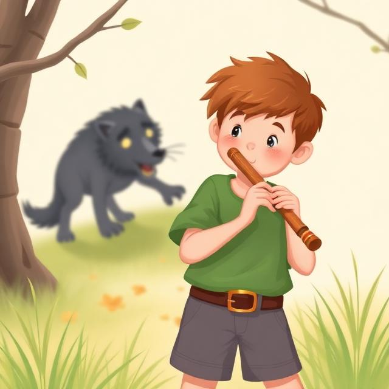

The shepherd boy took out his flute and began to practice. It sounded terrible! Some of the villagers heard him playing and made fun of his playing, but they weren't the only ones who heard it. A wolf, sneaking up on the shepherd boy's sheep, heard it too, and when the boy hit an especially bad note, the wolf got scared and ran into the woods before it could get any of his sheep!

Back